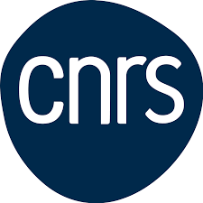
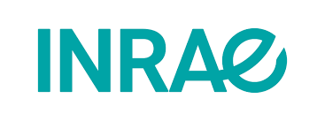

Sensibilisation à la recherche
Atelier interactif — Bachelor 3e année
Écouter • Questionner • Débattre • Structurer
Objectifs de l’atelier
- Comprendre les parcours et métiers de la recherche
- Découvrir le quotidien d'un chercheur
- Identifier les compétences clés du chercheur : du flou au précis et retour
- Pratiquer : formuler une question de recherche mesurable
- Débattre des valeurs, enjeux et limites
« Recherche », ça vous évoque ... ?
Notez 3 mots sur un post-it
Laboratoires de recherche
- Universités
- Écoles d'ingénieurs
- Écoles d'architecture
- Grandes entreprises (Vinci, Bouygues, EDF, etc.)


Quotidien d'un chercheur
- Lire des articles
- Écrire des articles • relire • répondre aux reviewers
- Conférences : soumissions, présentations, réseautage
- Monter des projets • budgets
- Encadrement d’étudiants • séminaires d’équipe
Compétences clés
- Aller-retour vision large ⇄ pointue
- Esprit critique & réplication • doutes productifs
- Communication : vulgariser, convaincre, écrire
- Collaboration : équipes, codes partagés, relectures
- Résilience : itérations, hypothèses réfutées
Une méthode en 6 étapes
- Observer un phénomène / une lacune
- Formuler une question et une hypothèse
- Définir des mesures et un protocole
- Collecter / simuler des données
- Analyser • valider • réviser
- Communiquer : article, poster, démo
Exercice
De l’idée à la question mesurable
« Réduire le bruit dans une salle de classe »
- Proposez une question de recherche
- Rendez-la mesurable (indicateurs, unités, outillage)
- Esquissez un protocole (conditions, variables, taille d’échantillon)
Ex. « Comment l’agencement des tables influence-t-il le niveau sonore moyen (dB) ? »
Outils et pratiques
- Gestion bibliographique : Zotero, styles, prises de notes
- Reproductibilité : notebooks, dépôts, pré-enregistrements
- Écriture scientifique : structure IMRaD, figures, légendes
- Communication orale : pitch 3 minutes, posters
Éthique & intégrité
- Consentement, protection des données, non-plagiat
- Biais, p-hacking, cherry-picking : comment les éviter
- Négatifs & réplications : valeur scientifique réelle
Valeurs & enjeux
- Avancées sociétales vs. temps long de la recherche
- Recherche fondamentale ↔ appliquée ↔ innovation
- Relations avec l’industrie • transferts • conflits d’intérêts
Discussion guidée : pourquoi financer le long terme ?
Publier & présenter
- Cycle : préprint → soumission → review → révision → publication
- Conférences : soumettre, présenter, recevoir des retours
- Indicateurs : pertinence > métriques, impact sociétal
Mini-débat
- Qu’est-ce qui vous paraît le plus excitant ?
- Qu’est-ce qui vous paraît le plus pénible ?
- Où vous voyez-vous contribuer (technique, écriture, terrain) ?
Synthèse
- Parcours possibles et diversité des trajectoires
- Quotidien : écrire, relire, conférences, projets
- Compétences : du vague au mesurable, collaboration, résilience
- Éthique et valeur collective de la recherche